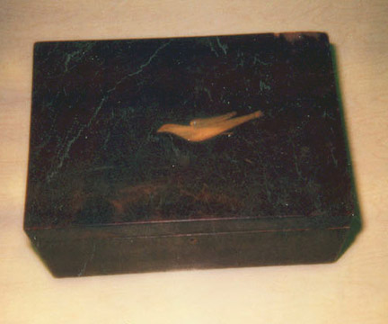
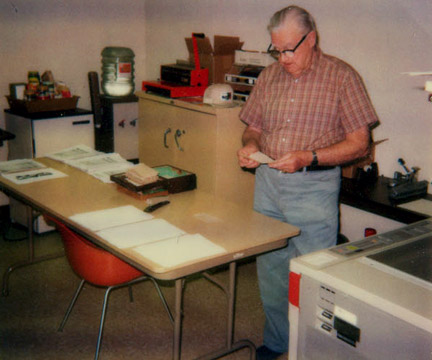
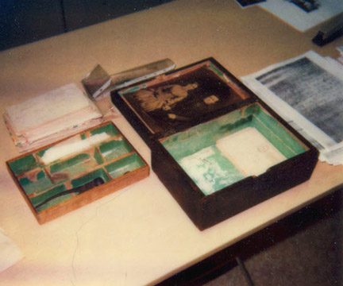
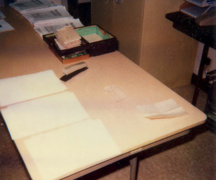

Letter Box

C. Lester Miller at Work

In the 1980’s a box filled with letters that had been sent to Lucy Miller Clewett. There were also letters sent by Nancy Partridge Miller to her Charles and Louisa Miller, Lucy’s parents. The letters constitute first had accounts of the lives of Charles and Louisa, and to some degree Nancy Miller. They mention many family members and they have been very useful in tracing the descendants of Zenas and Nancy Miller.
The following is Jerry Miller’s account about how the letter’s were found and preserved.
The box was found by William Ward, a grand son of Alice Miller Turner when he was cleaning out the garage of Alice’s son, Elbert "Roscoe" Turner upon his death. William is the son of Jessie Turner Ward, one of Alice Turner’s three children. C. Lester Miller was informed of the box and contents during a visit with Jessie In Downey, CA.
Subsequently, C. Lester Miller arraigned to borrow the box and contents for copying purposes. The photo’s you have of the box and contents during the copying process show C Lester Miller in the copying room. Jerry was there but not in the picture.
Each letter was copied to acid free paper using a Xerox process. Three copies were made of all letters. Two copies of each photograph were made using a color process photo copier. One copy of the letters and the box with original contents was returned to Jesse and her son. The second copy of the letters and one set of photos were given to C Lester Miller for "round robin" transmittal to his siblings. The third copy of the letters and one set of photos were given to Jerry A. Miller, Lester’s son.
At this time, the set given to C. Lester has not yet returned to him and he is unsure where it is. Jerry provided his set to his daughter Michelle Miller Masamitsu which she used to execute the word processor transcription.
Michelle returned the set to Jerry and has been in periodic contact with Jesse Ward Miller (Jesse remarried to a Miller, now deceased) and William Ward. Jesse gave the box and contents (minus the original letters) to Michelle to keep and Michelle has since given the box to Jerry. I think that William told Michelle that he knew where the original letters were and would get them to her. I’ am pretty sure that has not yet happened.
In summary, Jerry has the box, the original pictures (now scanned into digital) and a Xerox copy of the original letters.
| Letters Revealed  |
The Work Area  |